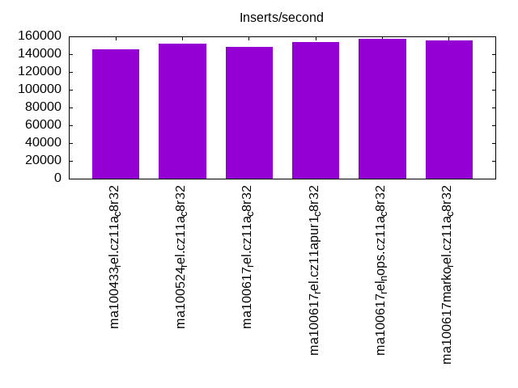
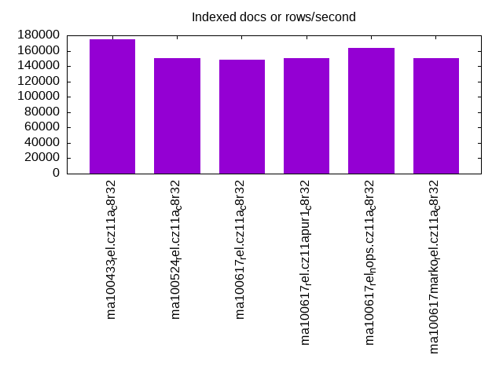
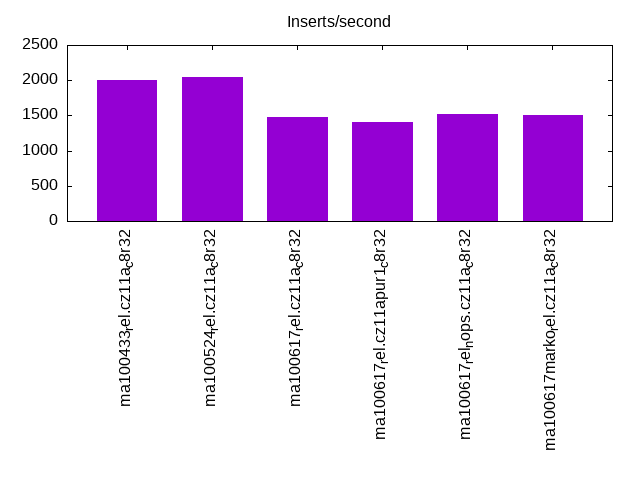
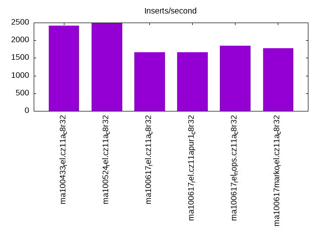
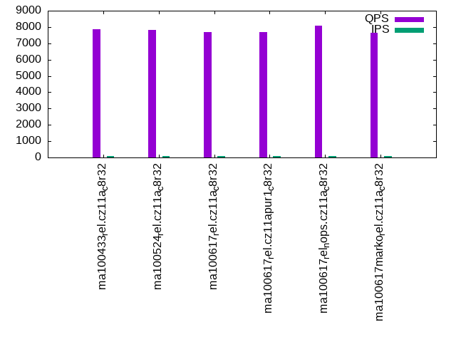
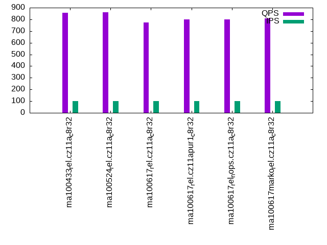
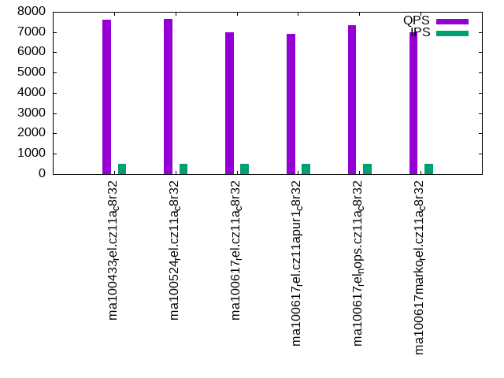
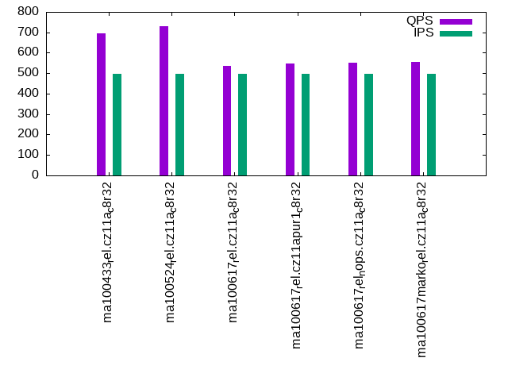
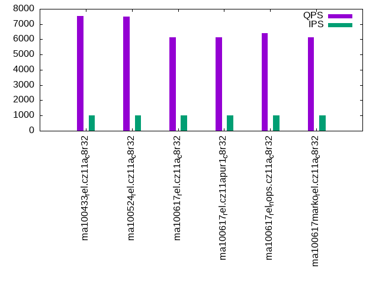
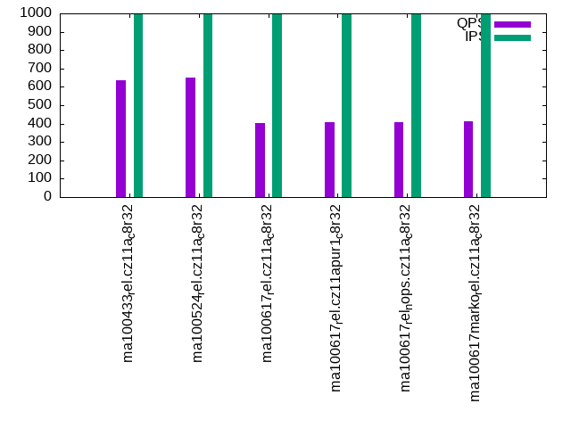

This is a report for the insert benchmark with 800M docs and 1 client(s). It is generated by scripts (bash, awk, sed) and Tufte might not be impressed. An overview of the insert benchmark is here and a short update is here. Below, by DBMS, I mean DBMS+version.config. An example is my8020.c10b40 where my means MySQL, 8020 is version 8.0.20 and c10b40 is the name for the configuration file.
The test server has 8 AMD cores, 32G RAM and an NVMe SSD. It is described here as the ASUS PN53. The benchmark was run with 1 client and there were 1 or 3 connections per client (1 for queries or inserts without rate limits, 1+1 for rate limited inserts+deletes). It uses 1 table. It loads 800M rows per table without secondary indexes, creates 3 secondary indexes per table, then inserts 4m+1m rows per table with a delete per insert to avoid growing the table. It then does 6 read+write tests for 1800s each that do queries as fast as possible with 100,100,500,500,1000,1000 inserts/s and the same for deletes/s per client concurrent with the queries. The database is larger than memory. Clients and the DBMS share one server. The per-database configs are in the per-database subdirectories here.
The tested DBMS are:
The numbers are inserts/s for l.i0, l.i1 and l.i2, indexed docs (or rows) /s for l.x and queries/s for qr100, qp100 thru qr1000, qp1000" The values are the average rate over the entire test for inserts (IPS) and queries (QPS). The range of values for IPS and QPS is split into 3 parts: bottom 25%, middle 50%, top 25%. Values in the bottom 25% have a red background, values in the top 25% have a green background and values in the middle have no color. A gray background is used for values that can be ignored because the DBMS did not sustain the target insert rate. Red backgrounds are not used when the minimum value is within 80% of the max value.
| dbms | l.i0 | l.x | l.i1 | l.i2 | qr100 | qp100 | qr500 | qp500 | qr1000 | qp1000 |
|---|---|---|---|---|---|---|---|---|---|---|
| ma100433_rel.cz11a_c8r32 | 145666 | 175285 | 1998 | 2421 | 7844 | 858 | 7602 | 694 | 7520 | 636 |
| ma100524_rel.cz11a_c8r32 | 151918 | 150517 | 2048 | 2481 | 7823 | 860 | 7635 | 729 | 7476 | 651 |
| ma100617_rel.cz11a_c8r32 | 148561 | 148782 | 1481 | 1664 | 7676 | 772 | 6997 | 537 | 6123 | 404 |
| ma100617_rel.cz11apur1_c8r32 | 153433 | 149925 | 1407 | 1656 | 7704 | 798 | 6924 | 549 | 6117 | 407 |
| ma100617_rel_nops.cz11a_c8r32 | 157325 | 164102 | 1513 | 1852 | 8092 | 798 | 7324 | 552 | 6408 | 410 |
| ma100617marko_rel.cz11a_c8r32 | 155219 | 150009 | 1500 | 1776 | 7637 | 809 | 7004 | 555 | 6141 | 411 |
This table has relative throughput, throughput for the DBMS relative to the DBMS in the first line, using the absolute throughput from the previous table. Values less than 0.95 have a yellow background. Values greater than 1.05 have a blue background.
| dbms | l.i0 | l.x | l.i1 | l.i2 | qr100 | qp100 | qr500 | qp500 | qr1000 | qp1000 |
|---|---|---|---|---|---|---|---|---|---|---|
| ma100433_rel.cz11a_c8r32 | 1.00 | 1.00 | 1.00 | 1.00 | 1.00 | 1.00 | 1.00 | 1.00 | 1.00 | 1.00 |
| ma100524_rel.cz11a_c8r32 | 1.04 | 0.86 | 1.03 | 1.02 | 1.00 | 1.00 | 1.00 | 1.05 | 0.99 | 1.02 |
| ma100617_rel.cz11a_c8r32 | 1.02 | 0.85 | 0.74 | 0.69 | 0.98 | 0.90 | 0.92 | 0.77 | 0.81 | 0.64 |
| ma100617_rel.cz11apur1_c8r32 | 1.05 | 0.86 | 0.70 | 0.68 | 0.98 | 0.93 | 0.91 | 0.79 | 0.81 | 0.64 |
| ma100617_rel_nops.cz11a_c8r32 | 1.08 | 0.94 | 0.76 | 0.76 | 1.03 | 0.93 | 0.96 | 0.80 | 0.85 | 0.64 |
| ma100617marko_rel.cz11a_c8r32 | 1.07 | 0.86 | 0.75 | 0.73 | 0.97 | 0.94 | 0.92 | 0.80 | 0.82 | 0.65 |
This lists the average rate of inserts/s for the tests that do inserts concurrent with queries. For such tests the query rate is listed in the table above. The read+write tests are setup so that the insert rate should match the target rate every second. Cells that are not at least 95% of the target have a red background to indicate a failure to satisfy the target.
| dbms | qr100.L1 | qp100.L2 | qr500.L3 | qp500.L4 | qr1000.L5 | qp1000.L6 |
|---|---|---|---|---|---|---|
| ma100433_rel.cz11a_c8r32 | 100 | 100 | 499 | 499 | 999 | 999 |
| ma100524_rel.cz11a_c8r32 | 100 | 100 | 499 | 499 | 999 | 999 |
| ma100617_rel.cz11a_c8r32 | 100 | 100 | 499 | 499 | 999 | 999 |
| ma100617_rel.cz11apur1_c8r32 | 100 | 100 | 499 | 499 | 999 | 999 |
| ma100617_rel_nops.cz11a_c8r32 | 100 | 100 | 499 | 499 | 999 | 999 |
| ma100617marko_rel.cz11a_c8r32 | 100 | 100 | 499 | 499 | 999 | 999 |
| target | 100 | 100 | 500 | 500 | 1000 | 1000 |
l.i0: load without secondary indexes. Graphs for performance per 1-second interval are here.
Average throughput:
Insert response time histogram: each cell has the percentage of responses that take <= the time in the header and max is the max response time in seconds. For the max column values in the top 25% of the range have a red background and in the bottom 25% of the range have a green background. The red background is not used when the min value is within 80% of the max value.
| dbms | 256us | 1ms | 4ms | 16ms | 64ms | 256ms | 1s | 4s | 16s | gt | max |
|---|---|---|---|---|---|---|---|---|---|---|---|
| ma100433_rel.cz11a_c8r32 | 99.207 | 0.349 | 0.336 | 0.104 | 0.004 | 0.187 | |||||
| ma100524_rel.cz11a_c8r32 | 99.434 | 0.225 | 0.199 | 0.137 | 0.004 | 0.182 | |||||
| ma100617_rel.cz11a_c8r32 | 99.516 | 0.267 | 0.111 | 0.101 | 0.005 | 0.184 | |||||
| ma100617_rel.cz11apur1_c8r32 | 99.637 | 0.147 | 0.107 | 0.105 | 0.005 | 0.190 | |||||
| ma100617_rel_nops.cz11a_c8r32 | 99.561 | 0.224 | 0.085 | 0.125 | 0.005 | 0.214 | |||||
| ma100617marko_rel.cz11a_c8r32 | 99.560 | 0.224 | 0.107 | 0.104 | 0.005 | 0.177 |
Performance metrics for the DBMS listed above. Some are normalized by throughput, others are not. Legend for results is here.
ips qps rps rmbps wps wmbps rpq rkbpq wpi wkbpi csps cpups cspq cpupq dbgb1 dbgb2 rss maxop p50 p99 tag 145666 0 0 0.0 1222.5 62.3 0.000 0.000 0.008 0.438 48930 27.8 0.336 0 52.6 83.4 0.0 0.187 146537 124323 ma100433_rel.cz11a_c8r32 151918 0 0 0.0 1262.3 50.4 0.000 0.000 0.008 0.340 67089 25.0 0.442 0 52.6 83.4 0.0 0.182 153035 129659 ma100524_rel.cz11a_c8r32 148561 0 0 0.0 896.1 41.8 0.000 0.000 0.006 0.288 19728 23.1 0.133 0 52.6 83.4 0.0 0.184 149591 126963 ma100617_rel.cz11a_c8r32 153433 0 0 0.0 924.3 43.1 0.000 0.000 0.006 0.288 19678 23.2 0.128 0 52.6 83.4 0.0 0.190 154430 132359 ma100617_rel.cz11apur1_c8r32 157325 0 0 0.0 948.3 44.3 0.000 0.000 0.006 0.288 20775 23.5 0.132 0 52.6 83.4 0.0 0.214 158225 135552 ma100617_rel_nops.cz11a_c8r32 155219 0 0 0.0 935.4 43.7 0.000 0.000 0.006 0.288 20395 23.5 0.131 0 52.6 83.4 0.0 0.177 156086 134552 ma100617marko_rel.cz11a_c8r32
l.x: create secondary indexes.
Average throughput:
Performance metrics for the DBMS listed above. Some are normalized by throughput, others are not. Legend for results is here.
ips qps rps rmbps wps wmbps rpq rkbpq wpi wkbpi csps cpups cspq cpupq dbgb1 dbgb2 rss maxop p50 p99 tag 175285 0 1865 173.8 2327.2 207.1 0.011 1.015 0.013 1.210 9951 11.1 0.057 0 119.9 150.7 0.0 0.002 NA NA ma100433_rel.cz11a_c8r32 150517 0 1598 148.9 1926.5 168.5 0.011 1.013 0.013 1.146 6424 11.1 0.043 0 119.9 150.7 0.0 0.001 NA NA ma100524_rel.cz11a_c8r32 148782 0 1580 147.4 1955.8 167.3 0.011 1.014 0.013 1.152 6201 10.9 0.042 0 119.9 150.7 0.0 0.001 NA NA ma100617_rel.cz11a_c8r32 149925 0 1589 148.1 1969.4 168.6 0.011 1.012 0.013 1.152 6265 11.0 0.042 0 119.9 150.7 0.0 0.002 NA NA ma100617_rel.cz11apur1_c8r32 164102 0 1742 162.5 2154.5 184.5 0.011 1.014 0.013 1.152 6802 10.9 0.041 0 119.9 150.7 0.0 0.001 NA NA ma100617_rel_nops.cz11a_c8r32 150009 0 1593 148.6 1970.9 168.8 0.011 1.014 0.013 1.152 6265 11.0 0.042 0 119.9 150.7 0.0 0.001 NA NA ma100617marko_rel.cz11a_c8r32
l.i1: continue load after secondary indexes created with 50 inserts per transaction. Graphs for performance per 1-second interval are here.
Average throughput:
Insert response time histogram: each cell has the percentage of responses that take <= the time in the header and max is the max response time in seconds. For the max column values in the top 25% of the range have a red background and in the bottom 25% of the range have a green background. The red background is not used when the min value is within 80% of the max value.
| dbms | 256us | 1ms | 4ms | 16ms | 64ms | 256ms | 1s | 4s | 16s | gt | max |
|---|---|---|---|---|---|---|---|---|---|---|---|
| ma100433_rel.cz11a_c8r32 | 20.325 | 75.623 | 4.050 | 0.001 | 0.001 | 3.837 | |||||
| ma100524_rel.cz11a_c8r32 | 16.576 | 79.794 | 3.629 | 0.001 | 4.638 | ||||||
| ma100617_rel.cz11a_c8r32 | 26.245 | 65.044 | 8.699 | 0.011 | 0.001 | 3.608 | |||||
| ma100617_rel.cz11apur1_c8r32 | 8.979 | 81.790 | 9.223 | 0.007 | 0.001 | 3.909 | |||||
| ma100617_rel_nops.cz11a_c8r32 | 34.487 | 56.697 | 8.812 | 0.001 | 0.001 | 3.833 | |||||
| ma100617marko_rel.cz11a_c8r32 | 25.051 | 66.164 | 8.783 | 0.001 | 0.001 | 3.567 |
Delete response time histogram: each cell has the percentage of responses that take <= the time in the header and max is the max response time in seconds. For the max column values in the top 25% of the range have a red background and in the bottom 25% of the range have a green background. The red background is not used when the min value is within 80% of the max value.
| dbms | 256us | 1ms | 4ms | 16ms | 64ms | 256ms | 1s | 4s | 16s | gt | max |
|---|---|---|---|---|---|---|---|---|---|---|---|
| ma100433_rel.cz11a_c8r32 | 85.008 | 14.819 | 0.172 | 0.001 | 3.713 | ||||||
| ma100524_rel.cz11a_c8r32 | 90.689 | 8.425 | 0.885 | 0.001 | 4.587 | ||||||
| ma100617_rel.cz11a_c8r32 | 83.716 | 10.151 | 6.131 | 0.001 | 3.511 | ||||||
| ma100617_rel.cz11apur1_c8r32 | 82.455 | 11.056 | 6.486 | 0.001 | 0.001 | 3.859 | |||||
| ma100617_rel_nops.cz11a_c8r32 | 84.642 | 9.218 | 6.139 | 0.001 | 3.786 | ||||||
| ma100617marko_rel.cz11a_c8r32 | 84.519 | 9.252 | 6.228 | 0.001 | 3.520 |
Performance metrics for the DBMS listed above. Some are normalized by throughput, others are not. Legend for results is here.
ips qps rps rmbps wps wmbps rpq rkbpq wpi wkbpi csps cpups cspq cpupq dbgb1 dbgb2 rss maxop p50 p99 tag 1998 0 9574 149.6 13298.7 384.4 4.792 76.665 6.656 196.985 67162 16.2 33.615 0 144.5 175.3 0.0 3.837 2048 1099 ma100433_rel.cz11a_c8r32 2048 0 9648 150.7 12866.9 348.7 4.711 75.371 6.282 174.353 93293 13.2 45.551 0 144.4 175.3 0.0 4.638 2098 1199 ma100524_rel.cz11a_c8r32 1481 0 7054 110.2 7667.5 209.5 4.763 76.210 5.178 144.868 65340 10.6 44.122 0 144.4 175.2 0.0 3.608 1448 949 ma100617_rel.cz11a_c8r32 1407 0 6704 104.7 7253.1 198.2 4.763 76.214 5.154 144.210 61718 10.1 43.853 0 144.4 175.2 0.0 3.909 1398 949 ma100617_rel.cz11apur1_c8r32 1513 0 7206 112.6 7876.9 215.2 4.761 76.183 5.205 145.630 67253 10.5 44.438 0 144.4 175.2 0.0 3.833 1499 949 ma100617_rel_nops.cz11a_c8r32 1500 0 7140 111.6 7792.8 213.0 4.759 76.150 5.194 145.351 65576 11.2 43.709 0 144.4 175.2 0.0 3.567 1498 999 ma100617marko_rel.cz11a_c8r32
l.i2: continue load after secondary indexes created with 5 inserts per transaction. Graphs for performance per 1-second interval are here.
Average throughput:
Insert response time histogram: each cell has the percentage of responses that take <= the time in the header and max is the max response time in seconds. For the max column values in the top 25% of the range have a red background and in the bottom 25% of the range have a green background. The red background is not used when the min value is within 80% of the max value.
| dbms | 256us | 1ms | 4ms | 16ms | 64ms | 256ms | 1s | 4s | 16s | gt | max |
|---|---|---|---|---|---|---|---|---|---|---|---|
| ma100433_rel.cz11a_c8r32 | 4.673 | 87.774 | 7.176 | 0.377 | 0.060 | ||||||
| ma100524_rel.cz11a_c8r32 | 4.641 | 91.679 | 3.508 | 0.171 | 0.001 | 0.204 | |||||
| ma100617_rel.cz11a_c8r32 | 5.123 | 91.429 | 2.102 | 0.628 | 0.718 | 0.209 | |||||
| ma100617_rel.cz11apur1_c8r32 | 0.001 | 2.387 | 94.837 | 1.761 | 0.323 | 0.691 | 0.206 | ||||
| ma100617_rel_nops.cz11a_c8r32 | 5.755 | 92.975 | 0.593 | 0.033 | 0.645 | 0.203 | |||||
| ma100617marko_rel.cz11a_c8r32 | 7.659 | 89.650 | 1.575 | 0.423 | 0.693 | 0.196 |
Delete response time histogram: each cell has the percentage of responses that take <= the time in the header and max is the max response time in seconds. For the max column values in the top 25% of the range have a red background and in the bottom 25% of the range have a green background. The red background is not used when the min value is within 80% of the max value.
| dbms | 256us | 1ms | 4ms | 16ms | 64ms | 256ms | 1s | 4s | 16s | gt | max |
|---|---|---|---|---|---|---|---|---|---|---|---|
| ma100433_rel.cz11a_c8r32 | 0.004 | 30.990 | 64.315 | 4.493 | 0.198 | 0.058 | |||||
| ma100524_rel.cz11a_c8r32 | 0.009 | 29.757 | 67.377 | 2.824 | 0.034 | 0.001 | 0.066 | ||||
| ma100617_rel.cz11a_c8r32 | 0.003 | 20.061 | 76.806 | 2.206 | 0.290 | 0.633 | 0.204 | ||||
| ma100617_rel.cz11apur1_c8r32 | 0.003 | 10.966 | 86.582 | 1.697 | 0.139 | 0.613 | 0.206 | ||||
| ma100617_rel_nops.cz11a_c8r32 | 0.001 | 20.834 | 78.140 | 0.451 | 0.013 | 0.562 | 0.200 | ||||
| ma100617marko_rel.cz11a_c8r32 | 0.002 | 26.569 | 70.962 | 1.639 | 0.202 | 0.626 | 0.190 |
Performance metrics for the DBMS listed above. Some are normalized by throughput, others are not. Legend for results is here.
ips qps rps rmbps wps wmbps rpq rkbpq wpi wkbpi csps cpups cspq cpupq dbgb1 dbgb2 rss maxop p50 p99 tag 2421 0 10482 163.8 14420.3 414.4 4.329 69.265 5.956 175.255 97521 21.3 40.276 0 144.5 175.3 0.0 0.060 2437 1984 ma100433_rel.cz11a_c8r32 2481 0 10501 164.1 13332.4 370.0 4.232 67.710 5.373 152.689 123299 17.4 49.691 0 144.4 175.3 0.0 0.204 2483 2283 ma100524_rel.cz11a_c8r32 1664 0 7112 111.1 7792.1 217.2 4.274 68.392 4.683 133.668 71346 12.4 42.881 0 144.4 175.2 0.0 0.209 1658 1398 ma100617_rel.cz11a_c8r32 1656 0 7085 110.7 7795.2 217.2 4.279 68.468 4.708 134.313 71090 12.3 42.939 0 144.4 175.2 0.0 0.206 1643 1324 ma100617_rel.cz11apur1_c8r32 1852 0 7946 124.2 8633.3 240.7 4.291 68.653 4.662 133.075 79112 12.9 42.721 0 144.4 175.2 0.0 0.203 1823 1354 ma100617_rel_nops.cz11a_c8r32 1776 0 7623 119.1 8336.9 232.3 4.292 68.674 4.694 133.922 74922 13.8 42.183 0 144.4 175.2 0.0 0.196 1723 1454 ma100617marko_rel.cz11a_c8r32
qr100.L1: range queries with 100 insert/s per client. Graphs for performance per 1-second interval are here.
Average throughput:
Query response time histogram: each cell has the percentage of responses that take <= the time in the header and max is the max response time in seconds. For max values in the top 25% of the range have a red background and in the bottom 25% of the range have a green background. The red background is not used when the min value is within 80% of the max value.
| dbms | 256us | 1ms | 4ms | 16ms | 64ms | 256ms | 1s | 4s | 16s | gt | max |
|---|---|---|---|---|---|---|---|---|---|---|---|
| ma100433_rel.cz11a_c8r32 | 99.795 | 0.163 | 0.036 | 0.006 | nonzero | 0.018 | |||||
| ma100524_rel.cz11a_c8r32 | 99.839 | 0.122 | 0.032 | 0.006 | 0.011 | ||||||
| ma100617_rel.cz11a_c8r32 | 99.481 | 0.477 | 0.033 | 0.009 | nonzero | 0.001 | 0.108 | ||||
| ma100617_rel.cz11apur1_c8r32 | 99.524 | 0.432 | 0.034 | 0.009 | nonzero | 0.001 | 0.115 | ||||
| ma100617_rel_nops.cz11a_c8r32 | 99.698 | 0.283 | 0.010 | 0.008 | nonzero | nonzero | 0.111 | ||||
| ma100617marko_rel.cz11a_c8r32 | 99.543 | 0.414 | 0.034 | 0.008 | nonzero | 0.001 | 0.112 |
Insert response time histogram: each cell has the percentage of responses that take <= the time in the header and max is the max response time in seconds. For max values in the top 25% of the range have a red background and in the bottom 25% of the range have a green background. The red background is not used when the min value is within 80% of the max value.
| dbms | 256us | 1ms | 4ms | 16ms | 64ms | 256ms | 1s | 4s | 16s | gt | max |
|---|---|---|---|---|---|---|---|---|---|---|---|
| ma100433_rel.cz11a_c8r32 | 57.833 | 41.889 | 0.278 | 0.075 | |||||||
| ma100524_rel.cz11a_c8r32 | 53.778 | 46.222 | 0.031 | ||||||||
| ma100617_rel.cz11a_c8r32 | 51.556 | 43.750 | 4.694 | 0.133 | |||||||
| ma100617_rel.cz11apur1_c8r32 | 51.361 | 43.861 | 4.778 | 0.136 | |||||||
| ma100617_rel_nops.cz11a_c8r32 | 55.333 | 40.361 | 4.306 | 0.134 | |||||||
| ma100617marko_rel.cz11a_c8r32 | 53.417 | 42.111 | 4.472 | 0.135 |
Delete response time histogram: each cell has the percentage of responses that take <= the time in the header and max is the max response time in seconds. For max values in the top 25% of the range have a red background and in the bottom 25% of the range have a green background. The red background is not used when the min value is within 80% of the max value.
| dbms | 256us | 1ms | 4ms | 16ms | 64ms | 256ms | 1s | 4s | 16s | gt | max |
|---|---|---|---|---|---|---|---|---|---|---|---|
| ma100433_rel.cz11a_c8r32 | 62.778 | 37.222 | 0.057 | ||||||||
| ma100524_rel.cz11a_c8r32 | 57.333 | 42.667 | 0.025 | ||||||||
| ma100617_rel.cz11a_c8r32 | 56.167 | 40.056 | 3.778 | 0.130 | |||||||
| ma100617_rel.cz11apur1_c8r32 | 56.000 | 39.944 | 4.056 | 0.134 | |||||||
| ma100617_rel_nops.cz11a_c8r32 | 56.639 | 39.778 | 3.583 | 0.130 | |||||||
| ma100617marko_rel.cz11a_c8r32 | 55.722 | 40.417 | 3.861 | 0.127 |
Performance metrics for the DBMS listed above. Some are normalized by throughput, others are not. Legend for results is here.
ips qps rps rmbps wps wmbps rpq rkbpq wpi wkbpi csps cpups cspq cpupq dbgb1 dbgb2 rss maxop p50 p99 tag 100 7844 469 7.3 1508.6 42.3 0.060 0.957 15.116 433.833 36960 12.6 4.712 0 144.5 175.3 0.0 0.018 7896 6297 ma100433_rel.cz11a_c8r32 100 7823 456 7.1 93.7 3.1 0.058 0.932 0.939 31.579 33116 12.3 4.233 0 144.4 175.3 0.0 0.011 7879 6446 ma100524_rel.cz11a_c8r32 100 7676 457 7.1 88.5 3.0 0.059 0.952 0.887 30.412 31600 12.0 4.117 0 144.4 175.2 0.0 0.108 7752 6345 ma100617_rel.cz11a_c8r32 100 7704 458 7.2 89.4 3.0 0.059 0.951 0.896 30.680 31704 12.1 4.115 0 144.4 175.2 0.0 0.115 7783 6185 ma100617_rel.cz11apur1_c8r32 100 8092 456 7.1 88.4 3.0 0.056 0.903 0.886 30.414 33191 11.5 4.102 0 144.4 175.2 0.0 0.111 8167 7198 ma100617_rel_nops.cz11a_c8r32 100 7637 457 7.1 88.6 3.0 0.060 0.957 0.888 30.444 31412 12.1 4.113 0 144.4 175.2 0.0 0.112 7719 6425 ma100617marko_rel.cz11a_c8r32
qp100.L2: point queries with 100 insert/s per client. Graphs for performance per 1-second interval are here.
Average throughput:
Query response time histogram: each cell has the percentage of responses that take <= the time in the header and max is the max response time in seconds. For max values in the top 25% of the range have a red background and in the bottom 25% of the range have a green background. The red background is not used when the min value is within 80% of the max value.
| dbms | 256us | 1ms | 4ms | 16ms | 64ms | 256ms | 1s | 4s | 16s | gt | max |
|---|---|---|---|---|---|---|---|---|---|---|---|
| ma100433_rel.cz11a_c8r32 | 0.004 | 30.950 | 68.771 | 0.274 | 0.002 | 0.046 | |||||
| ma100524_rel.cz11a_c8r32 | 0.004 | 30.696 | 69.292 | 0.007 | 0.001 | 0.026 | |||||
| ma100617_rel.cz11a_c8r32 | 0.002 | 30.385 | 69.242 | 0.064 | 0.211 | 0.096 | 0.110 | ||||
| ma100617_rel.cz11apur1_c8r32 | 0.003 | 36.433 | 63.053 | 0.203 | 0.214 | 0.093 | 0.109 | ||||
| ma100617_rel_nops.cz11a_c8r32 | 0.004 | 36.047 | 63.512 | 0.132 | 0.211 | 0.094 | 0.109 | ||||
| ma100617marko_rel.cz11a_c8r32 | 0.004 | 36.856 | 62.831 | 0.006 | 0.212 | 0.092 | 0.107 |
Insert response time histogram: each cell has the percentage of responses that take <= the time in the header and max is the max response time in seconds. For max values in the top 25% of the range have a red background and in the bottom 25% of the range have a green background. The red background is not used when the min value is within 80% of the max value.
| dbms | 256us | 1ms | 4ms | 16ms | 64ms | 256ms | 1s | 4s | 16s | gt | max |
|---|---|---|---|---|---|---|---|---|---|---|---|
| ma100433_rel.cz11a_c8r32 | 19.444 | 80.194 | 0.361 | 0.138 | |||||||
| ma100524_rel.cz11a_c8r32 | 8.250 | 91.722 | 0.028 | 0.065 | |||||||
| ma100617_rel.cz11a_c8r32 | 25.639 | 68.000 | 6.361 | 0.123 | |||||||
| ma100617_rel.cz11apur1_c8r32 | 8.278 | 84.806 | 6.917 | 0.142 | |||||||
| ma100617_rel_nops.cz11a_c8r32 | 65.583 | 28.583 | 5.833 | 0.123 | |||||||
| ma100617marko_rel.cz11a_c8r32 | 30.611 | 63.917 | 5.472 | 0.125 |
Delete response time histogram: each cell has the percentage of responses that take <= the time in the header and max is the max response time in seconds. For max values in the top 25% of the range have a red background and in the bottom 25% of the range have a green background. The red background is not used when the min value is within 80% of the max value.
| dbms | 256us | 1ms | 4ms | 16ms | 64ms | 256ms | 1s | 4s | 16s | gt | max |
|---|---|---|---|---|---|---|---|---|---|---|---|
| ma100433_rel.cz11a_c8r32 | 96.111 | 3.778 | 0.111 | 0.077 | |||||||
| ma100524_rel.cz11a_c8r32 | 85.194 | 14.806 | 0.057 | ||||||||
| ma100617_rel.cz11a_c8r32 | 83.500 | 11.778 | 4.722 | 0.120 | |||||||
| ma100617_rel.cz11apur1_c8r32 | 67.222 | 27.417 | 5.361 | 0.138 | |||||||
| ma100617_rel_nops.cz11a_c8r32 | 84.778 | 10.972 | 4.250 | 0.118 | |||||||
| ma100617marko_rel.cz11a_c8r32 | 85.139 | 10.611 | 4.250 | 0.117 |
Performance metrics for the DBMS listed above. Some are normalized by throughput, others are not. Legend for results is here.
ips qps rps rmbps wps wmbps rpq rkbpq wpi wkbpi csps cpups cspq cpupq dbgb1 dbgb2 rss maxop p50 p99 tag 100 858 6478 101.2 1497.0 41.9 7.553 120.841 15.000 430.337 22027 4.5 25.681 0 144.5 175.3 0.0 0.046 879 640 ma100433_rel.cz11a_c8r32 100 860 6467 101.0 944.1 25.5 7.522 120.357 9.460 261.718 22723 4.4 26.431 0 144.4 175.3 0.0 0.026 879 639 ma100524_rel.cz11a_c8r32 100 772 5955 93.0 925.6 25.3 7.717 123.479 9.275 259.212 20023 4.7 25.950 0 144.4 175.2 0.0 0.110 815 511 ma100617_rel.cz11a_c8r32 100 798 6112 95.5 927.3 25.3 7.662 122.585 9.292 259.723 20379 4.4 25.547 0 144.4 175.2 0.0 0.109 847 512 ma100617_rel.cz11apur1_c8r32 100 798 6110 95.5 929.7 25.4 7.660 122.559 9.316 260.392 20477 4.3 25.670 0 144.4 175.2 0.0 0.109 832 527 ma100617_rel_nops.cz11a_c8r32 100 809 6181 96.6 930.7 25.4 7.636 122.181 9.326 260.606 20630 4.4 25.487 0 144.4 175.2 0.0 0.107 863 527 ma100617marko_rel.cz11a_c8r32
qr500.L3: range queries with 500 insert/s per client. Graphs for performance per 1-second interval are here.
Average throughput:
Query response time histogram: each cell has the percentage of responses that take <= the time in the header and max is the max response time in seconds. For max values in the top 25% of the range have a red background and in the bottom 25% of the range have a green background. The red background is not used when the min value is within 80% of the max value.
| dbms | 256us | 1ms | 4ms | 16ms | 64ms | 256ms | 1s | 4s | 16s | gt | max |
|---|---|---|---|---|---|---|---|---|---|---|---|
| ma100433_rel.cz11a_c8r32 | 99.586 | 0.326 | 0.073 | 0.016 | nonzero | 0.036 | |||||
| ma100524_rel.cz11a_c8r32 | 99.684 | 0.194 | 0.106 | 0.016 | 0.012 | ||||||
| ma100617_rel.cz11a_c8r32 | 98.020 | 1.865 | 0.085 | 0.023 | 0.002 | 0.005 | 0.169 | ||||
| ma100617_rel.cz11apur1_c8r32 | 97.932 | 1.941 | 0.097 | 0.023 | 0.002 | 0.005 | 0.167 | ||||
| ma100617_rel_nops.cz11a_c8r32 | 98.373 | 1.523 | 0.077 | 0.021 | 0.002 | 0.005 | 0.164 | ||||
| ma100617marko_rel.cz11a_c8r32 | 98.184 | 1.708 | 0.079 | 0.022 | 0.002 | 0.005 | 0.166 |
Insert response time histogram: each cell has the percentage of responses that take <= the time in the header and max is the max response time in seconds. For max values in the top 25% of the range have a red background and in the bottom 25% of the range have a green background. The red background is not used when the min value is within 80% of the max value.
| dbms | 256us | 1ms | 4ms | 16ms | 64ms | 256ms | 1s | 4s | 16s | gt | max |
|---|---|---|---|---|---|---|---|---|---|---|---|
| ma100433_rel.cz11a_c8r32 | 67.606 | 32.194 | 0.200 | 0.125 | |||||||
| ma100524_rel.cz11a_c8r32 | 60.044 | 39.956 | 0.046 | ||||||||
| ma100617_rel.cz11a_c8r32 | 62.844 | 31.556 | 5.600 | 0.189 | |||||||
| ma100617_rel.cz11apur1_c8r32 | 56.844 | 37.150 | 6.006 | 0.187 | |||||||
| ma100617_rel_nops.cz11a_c8r32 | 69.194 | 25.022 | 5.783 | 0.188 | |||||||
| ma100617marko_rel.cz11a_c8r32 | 67.744 | 26.517 | 5.739 | 0.187 |
Delete response time histogram: each cell has the percentage of responses that take <= the time in the header and max is the max response time in seconds. For max values in the top 25% of the range have a red background and in the bottom 25% of the range have a green background. The red background is not used when the min value is within 80% of the max value.
| dbms | 256us | 1ms | 4ms | 16ms | 64ms | 256ms | 1s | 4s | 16s | gt | max |
|---|---|---|---|---|---|---|---|---|---|---|---|
| ma100433_rel.cz11a_c8r32 | 87.822 | 12.161 | 0.017 | 0.075 | |||||||
| ma100524_rel.cz11a_c8r32 | 91.378 | 8.622 | 0.034 | ||||||||
| ma100617_rel.cz11a_c8r32 | 86.828 | 8.467 | 4.706 | 0.185 | |||||||
| ma100617_rel.cz11apur1_c8r32 | 84.950 | 10.133 | 4.917 | 0.184 | |||||||
| ma100617_rel_nops.cz11a_c8r32 | 87.322 | 7.878 | 4.800 | 0.186 | |||||||
| ma100617marko_rel.cz11a_c8r32 | 87.078 | 8.344 | 4.578 | 0.182 |
Performance metrics for the DBMS listed above. Some are normalized by throughput, others are not. Legend for results is here.
ips qps rps rmbps wps wmbps rpq rkbpq wpi wkbpi csps cpups cspq cpupq dbgb1 dbgb2 rss maxop p50 p99 tag 499 7602 2377 37.1 6155.6 173.3 0.313 5.003 12.333 355.460 59931 16.1 7.884 0 144.5 175.3 0.0 0.036 7690 4139 ma100433_rel.cz11a_c8r32 499 7635 2395 37.4 3216.1 89.1 0.314 5.018 6.440 182.620 54820 14.6 7.180 0 144.4 175.3 0.0 0.012 7704 4427 ma100524_rel.cz11a_c8r32 499 6997 2375 37.1 1725.6 48.9 0.339 5.430 3.455 100.365 43787 13.7 6.258 0 144.4 175.2 0.0 0.169 7179 4395 ma100617_rel.cz11a_c8r32 499 6924 2373 37.1 1724.8 48.9 0.343 5.483 3.454 100.334 43471 13.7 6.278 0 144.4 175.2 0.0 0.167 7083 3580 ma100617_rel.cz11apur1_c8r32 499 7324 2376 37.1 1723.5 48.9 0.324 5.190 3.451 100.255 45165 13.4 6.166 0 144.4 175.2 0.0 0.164 7515 4683 ma100617_rel_nops.cz11a_c8r32 499 7004 2375 37.1 1722.7 48.9 0.339 5.427 3.449 100.220 43752 13.8 6.247 0 144.4 175.2 0.0 0.166 7160 4621 ma100617marko_rel.cz11a_c8r32
qp500.L4: point queries with 500 insert/s per client. Graphs for performance per 1-second interval are here.
Average throughput:
Query response time histogram: each cell has the percentage of responses that take <= the time in the header and max is the max response time in seconds. For max values in the top 25% of the range have a red background and in the bottom 25% of the range have a green background. The red background is not used when the min value is within 80% of the max value.
| dbms | 256us | 1ms | 4ms | 16ms | 64ms | 256ms | 1s | 4s | 16s | gt | max |
|---|---|---|---|---|---|---|---|---|---|---|---|
| ma100433_rel.cz11a_c8r32 | nonzero | 8.395 | 89.345 | 2.245 | 0.015 | 0.043 | |||||
| ma100524_rel.cz11a_c8r32 | 9.479 | 89.351 | 1.156 | 0.014 | 0.054 | ||||||
| ma100617_rel.cz11a_c8r32 | nonzero | 6.672 | 91.904 | 0.904 | 0.007 | 0.512 | 0.156 | ||||
| ma100617_rel.cz11apur1_c8r32 | 8.688 | 89.773 | 1.023 | 0.005 | 0.511 | 0.159 | |||||
| ma100617_rel_nops.cz11a_c8r32 | 8.883 | 89.660 | 0.942 | 0.007 | 0.507 | 0.154 | |||||
| ma100617marko_rel.cz11a_c8r32 | 8.930 | 89.679 | 0.879 | 0.006 | 0.506 | 0.154 |
Insert response time histogram: each cell has the percentage of responses that take <= the time in the header and max is the max response time in seconds. For max values in the top 25% of the range have a red background and in the bottom 25% of the range have a green background. The red background is not used when the min value is within 80% of the max value.
| dbms | 256us | 1ms | 4ms | 16ms | 64ms | 256ms | 1s | 4s | 16s | gt | max |
|---|---|---|---|---|---|---|---|---|---|---|---|
| ma100433_rel.cz11a_c8r32 | 59.206 | 39.828 | 0.967 | 0.149 | |||||||
| ma100524_rel.cz11a_c8r32 | 78.189 | 19.811 | 2.000 | 0.156 | |||||||
| ma100617_rel.cz11a_c8r32 | 58.583 | 28.739 | 12.678 | 0.173 | |||||||
| ma100617_rel.cz11apur1_c8r32 | 33.406 | 53.283 | 13.311 | 0.203 | |||||||
| ma100617_rel_nops.cz11a_c8r32 | 73.822 | 14.239 | 11.939 | 0.170 | |||||||
| ma100617marko_rel.cz11a_c8r32 | 60.789 | 26.450 | 12.761 | 0.166 |
Delete response time histogram: each cell has the percentage of responses that take <= the time in the header and max is the max response time in seconds. For max values in the top 25% of the range have a red background and in the bottom 25% of the range have a green background. The red background is not used when the min value is within 80% of the max value.
| dbms | 256us | 1ms | 4ms | 16ms | 64ms | 256ms | 1s | 4s | 16s | gt | max |
|---|---|---|---|---|---|---|---|---|---|---|---|
| ma100433_rel.cz11a_c8r32 | 88.239 | 11.422 | 0.339 | 0.101 | |||||||
| ma100524_rel.cz11a_c8r32 | 95.517 | 3.717 | 0.767 | 0.143 | |||||||
| ma100617_rel.cz11a_c8r32 | 84.767 | 5.550 | 9.683 | 0.165 | |||||||
| ma100617_rel.cz11apur1_c8r32 | 78.067 | 11.183 | 10.750 | 0.197 | |||||||
| ma100617_rel_nops.cz11a_c8r32 | 88.883 | 2.217 | 8.900 | 0.163 | |||||||
| ma100617marko_rel.cz11a_c8r32 | 84.461 | 5.506 | 10.033 | 0.162 |
Performance metrics for the DBMS listed above. Some are normalized by throughput, others are not. Legend for results is here.
ips qps rps rmbps wps wmbps rpq rkbpq wpi wkbpi csps cpups cspq cpupq dbgb1 dbgb2 rss maxop p50 p99 tag 499 694 8216 128.4 6054.1 170.2 11.845 189.524 12.130 349.296 40956 7.5 59.048 0 144.5 175.3 0.0 0.043 703 575 ma100433_rel.cz11a_c8r32 499 729 8445 131.9 4529.3 125.6 11.582 185.316 9.075 257.756 44718 6.1 61.333 0 144.4 175.3 0.0 0.054 735 639 ma100524_rel.cz11a_c8r32 499 537 7015 109.6 2620.4 72.6 13.053 208.851 5.250 148.886 32621 7.6 60.701 0 144.4 175.2 0.0 0.156 543 416 ma100617_rel.cz11a_c8r32 499 549 7108 111.1 2637.3 73.0 12.949 207.190 5.284 149.846 32900 7.5 59.938 0 144.4 175.2 0.0 0.159 559 400 ma100617_rel.cz11apur1_c8r32 499 552 7115 111.2 2649.2 73.4 12.892 206.276 5.305 150.450 32841 7.3 59.505 0 144.4 175.2 0.0 0.154 560 400 ma100617_rel_nops.cz11a_c8r32 499 555 7145 111.6 2630.5 72.8 12.881 206.099 5.271 149.453 32969 7.5 59.435 0 144.4 175.2 0.0 0.154 560 416 ma100617marko_rel.cz11a_c8r32
qr1000.L5: range queries with 1000 insert/s per client. Graphs for performance per 1-second interval are here.
Average throughput:
Query response time histogram: each cell has the percentage of responses that take <= the time in the header and max is the max response time in seconds. For max values in the top 25% of the range have a red background and in the bottom 25% of the range have a green background. The red background is not used when the min value is within 80% of the max value.
| dbms | 256us | 1ms | 4ms | 16ms | 64ms | 256ms | 1s | 4s | 16s | gt | max |
|---|---|---|---|---|---|---|---|---|---|---|---|
| ma100433_rel.cz11a_c8r32 | 99.422 | 0.495 | 0.072 | 0.011 | nonzero | 0.032 | |||||
| ma100524_rel.cz11a_c8r32 | 99.569 | 0.282 | 0.129 | 0.020 | 0.012 | ||||||
| ma100617_rel.cz11a_c8r32 | 96.626 | 3.228 | 0.104 | 0.025 | 0.002 | 0.016 | 0.169 | ||||
| ma100617_rel.cz11apur1_c8r32 | 96.017 | 3.842 | 0.104 | 0.019 | 0.002 | 0.016 | 0.184 | ||||
| ma100617_rel_nops.cz11a_c8r32 | 97.114 | 2.744 | 0.101 | 0.025 | 0.002 | 0.015 | 0.171 | ||||
| ma100617marko_rel.cz11a_c8r32 | 96.879 | 2.969 | 0.110 | 0.025 | 0.002 | 0.016 | 0.172 |
Insert response time histogram: each cell has the percentage of responses that take <= the time in the header and max is the max response time in seconds. For max values in the top 25% of the range have a red background and in the bottom 25% of the range have a green background. The red background is not used when the min value is within 80% of the max value.
| dbms | 256us | 1ms | 4ms | 16ms | 64ms | 256ms | 1s | 4s | 16s | gt | max |
|---|---|---|---|---|---|---|---|---|---|---|---|
| ma100433_rel.cz11a_c8r32 | 86.556 | 13.394 | 0.050 | 0.114 | |||||||
| ma100524_rel.cz11a_c8r32 | 86.569 | 13.431 | 0.053 | ||||||||
| ma100617_rel.cz11a_c8r32 | 81.728 | 12.217 | 6.056 | 0.203 | |||||||
| ma100617_rel.cz11apur1_c8r32 | 75.331 | 18.547 | 6.122 | 0.201 | |||||||
| ma100617_rel_nops.cz11a_c8r32 | 81.656 | 12.231 | 6.114 | 0.212 | |||||||
| ma100617marko_rel.cz11a_c8r32 | 82.317 | 11.631 | 6.053 | 0.221 |
Delete response time histogram: each cell has the percentage of responses that take <= the time in the header and max is the max response time in seconds. For max values in the top 25% of the range have a red background and in the bottom 25% of the range have a green background. The red background is not used when the min value is within 80% of the max value.
| dbms | 256us | 1ms | 4ms | 16ms | 64ms | 256ms | 1s | 4s | 16s | gt | max |
|---|---|---|---|---|---|---|---|---|---|---|---|
| ma100433_rel.cz11a_c8r32 | 95.500 | 4.500 | 0.058 | ||||||||
| ma100524_rel.cz11a_c8r32 | 95.200 | 4.800 | 0.046 | ||||||||
| ma100617_rel.cz11a_c8r32 | 90.969 | 3.708 | 5.322 | 0.204 | |||||||
| ma100617_rel.cz11apur1_c8r32 | 89.906 | 4.744 | 5.350 | 0.201 | |||||||
| ma100617_rel_nops.cz11a_c8r32 | 91.014 | 3.653 | 5.333 | 0.190 | |||||||
| ma100617marko_rel.cz11a_c8r32 | 90.547 | 4.064 | 5.389 | 0.206 |
Performance metrics for the DBMS listed above. Some are normalized by throughput, others are not. Legend for results is here.
ips qps rps rmbps wps wmbps rpq rkbpq wpi wkbpi csps cpups cspq cpupq dbgb1 dbgb2 rss maxop p50 p99 tag 999 7520 4241 66.3 9163.8 258.5 0.564 9.022 9.175 265.066 77808 19.2 10.346 0 144.5 175.3 0.0 0.032 7594 4651 ma100433_rel.cz11a_c8r32 999 7476 4140 64.7 6784.9 188.4 0.554 8.860 6.793 193.147 77413 17.1 10.354 0 144.4 175.3 0.0 0.012 7544 5372 ma100524_rel.cz11a_c8r32 999 6123 4189 65.5 3802.6 106.6 0.684 10.947 3.807 109.284 56940 15.2 9.299 0 144.4 175.2 0.0 0.169 6185 2269 ma100617_rel.cz11a_c8r32 999 6117 4198 65.6 3813.9 106.9 0.686 10.980 3.818 109.577 57089 15.2 9.333 0 144.4 175.2 0.0 0.184 6140 2495 ma100617_rel.cz11apur1_c8r32 999 6408 4200 65.6 3777.0 105.9 0.655 10.486 3.782 108.551 58398 14.8 9.113 0 144.4 175.2 0.0 0.171 6441 2254 ma100617_rel_nops.cz11a_c8r32 999 6141 4191 65.5 3810.8 106.8 0.682 10.918 3.815 109.517 56874 15.4 9.261 0 144.4 175.2 0.0 0.172 6185 2190 ma100617marko_rel.cz11a_c8r32
qp1000.L6: point queries with 1000 insert/s per client. Graphs for performance per 1-second interval are here.
Average throughput:
Query response time histogram: each cell has the percentage of responses that take <= the time in the header and max is the max response time in seconds. For max values in the top 25% of the range have a red background and in the bottom 25% of the range have a green background. The red background is not used when the min value is within 80% of the max value.
| dbms | 256us | 1ms | 4ms | 16ms | 64ms | 256ms | 1s | 4s | 16s | gt | max |
|---|---|---|---|---|---|---|---|---|---|---|---|
| ma100433_rel.cz11a_c8r32 | 2.163 | 94.763 | 3.060 | 0.014 | 0.047 | ||||||
| ma100524_rel.cz11a_c8r32 | 2.774 | 94.951 | 2.246 | 0.029 | 0.054 | ||||||
| ma100617_rel.cz11a_c8r32 | 1.259 | 96.409 | 1.539 | 0.015 | 0.778 | 0.157 | |||||
| ma100617_rel.cz11apur1_c8r32 | 1.676 | 95.577 | 1.950 | 0.010 | 0.787 | 0.159 | |||||
| ma100617_rel_nops.cz11a_c8r32 | 1.544 | 96.127 | 1.535 | 0.019 | 0.774 | 0.162 | |||||
| ma100617marko_rel.cz11a_c8r32 | 1.641 | 95.981 | 1.589 | 0.015 | 0.774 | 0.155 |
Insert response time histogram: each cell has the percentage of responses that take <= the time in the header and max is the max response time in seconds. For max values in the top 25% of the range have a red background and in the bottom 25% of the range have a green background. The red background is not used when the min value is within 80% of the max value.
| dbms | 256us | 1ms | 4ms | 16ms | 64ms | 256ms | 1s | 4s | 16s | gt | max |
|---|---|---|---|---|---|---|---|---|---|---|---|
| ma100433_rel.cz11a_c8r32 | 78.597 | 21.050 | 0.353 | 0.115 | |||||||
| ma100524_rel.cz11a_c8r32 | 91.944 | 6.311 | 1.744 | 0.161 | |||||||
| ma100617_rel.cz11a_c8r32 | 63.786 | 24.794 | 11.419 | 0.208 | |||||||
| ma100617_rel.cz11apur1_c8r32 | 51.644 | 35.944 | 12.411 | 0.214 | |||||||
| ma100617_rel_nops.cz11a_c8r32 | 66.242 | 22.286 | 11.472 | 0.204 | |||||||
| ma100617marko_rel.cz11a_c8r32 | 66.453 | 21.903 | 11.644 | 0.228 |
Delete response time histogram: each cell has the percentage of responses that take <= the time in the header and max is the max response time in seconds. For max values in the top 25% of the range have a red background and in the bottom 25% of the range have a green background. The red background is not used when the min value is within 80% of the max value.
| dbms | 256us | 1ms | 4ms | 16ms | 64ms | 256ms | 1s | 4s | 16s | gt | max |
|---|---|---|---|---|---|---|---|---|---|---|---|
| ma100433_rel.cz11a_c8r32 | 90.144 | 9.767 | 0.089 | 0.082 | |||||||
| ma100524_rel.cz11a_c8r32 | 95.858 | 3.714 | 0.428 | 0.125 | |||||||
| ma100617_rel.cz11a_c8r32 | 86.144 | 4.111 | 9.744 | 0.202 | |||||||
| ma100617_rel.cz11apur1_c8r32 | 84.306 | 5.258 | 10.436 | 0.197 | |||||||
| ma100617_rel_nops.cz11a_c8r32 | 86.772 | 3.550 | 9.678 | 0.200 | |||||||
| ma100617marko_rel.cz11a_c8r32 | 86.836 | 3.344 | 9.819 | 0.226 |
Performance metrics for the DBMS listed above. Some are normalized by throughput, others are not. Legend for results is here.
ips qps rps rmbps wps wmbps rpq rkbpq wpi wkbpi csps cpups cspq cpupq dbgb1 dbgb2 rss maxop p50 p99 tag 999 636 10287 160.7 7319.5 206.9 16.179 258.864 7.328 212.089 51254 10.2 80.613 0 144.5 175.3 0.0 0.047 655 511 ma100433_rel.cz11a_c8r32 999 651 10343 161.6 7802.2 216.6 15.878 254.043 7.812 222.085 65614 8.6 100.728 0 144.4 175.3 0.0 0.054 655 591 ma100524_rel.cz11a_c8r32 999 404 8255 129.0 4390.2 122.2 20.407 326.510 4.396 125.258 47064 9.7 116.351 0 144.4 175.2 0.0 0.157 400 320 ma100617_rel.cz11a_c8r32 999 407 8282 129.4 4373.9 121.7 20.359 325.742 4.379 124.806 47302 9.6 116.278 0 144.4 175.2 0.0 0.159 416 320 ma100617_rel.cz11apur1_c8r32 999 410 8303 129.7 4396.7 122.4 20.270 324.319 4.402 125.443 47513 9.5 115.998 0 144.4 175.2 0.0 0.162 416 336 ma100617_rel_nops.cz11a_c8r32 999 411 8322 130.0 4390.5 122.2 20.228 323.641 4.396 125.266 46824 10.0 113.817 0 144.4 175.2 0.0 0.155 416 336 ma100617marko_rel.cz11a_c8r32
l.i0: load without secondary indexes
Performance metrics for all DBMS, not just the ones listed above. Some are normalized by throughput, others are not. Legend for results is here.
ips qps rps rmbps wps wmbps rpq rkbpq wpi wkbpi csps cpups cspq cpupq dbgb1 dbgb2 rss maxop p50 p99 tag 145666 0 0 0.0 1222.5 62.3 0.000 0.000 0.008 0.438 48930 27.8 0.336 0 52.6 83.4 0.0 0.187 146537 124323 ma100433_rel.cz11a_c8r32 151918 0 0 0.0 1262.3 50.4 0.000 0.000 0.008 0.340 67089 25.0 0.442 0 52.6 83.4 0.0 0.182 153035 129659 ma100524_rel.cz11a_c8r32 148561 0 0 0.0 896.1 41.8 0.000 0.000 0.006 0.288 19728 23.1 0.133 0 52.6 83.4 0.0 0.184 149591 126963 ma100617_rel.cz11a_c8r32 153433 0 0 0.0 924.3 43.1 0.000 0.000 0.006 0.288 19678 23.2 0.128 0 52.6 83.4 0.0 0.190 154430 132359 ma100617_rel.cz11apur1_c8r32 157325 0 0 0.0 948.3 44.3 0.000 0.000 0.006 0.288 20775 23.5 0.132 0 52.6 83.4 0.0 0.214 158225 135552 ma100617_rel_nops.cz11a_c8r32 155219 0 0 0.0 935.4 43.7 0.000 0.000 0.006 0.288 20395 23.5 0.131 0 52.6 83.4 0.0 0.177 156086 134552 ma100617marko_rel.cz11a_c8r32
l.x: create secondary indexes
Performance metrics for all DBMS, not just the ones listed above. Some are normalized by throughput, others are not. Legend for results is here.
ips qps rps rmbps wps wmbps rpq rkbpq wpi wkbpi csps cpups cspq cpupq dbgb1 dbgb2 rss maxop p50 p99 tag 175285 0 1865 173.8 2327.2 207.1 0.011 1.015 0.013 1.210 9951 11.1 0.057 0 119.9 150.7 0.0 0.002 NA NA ma100433_rel.cz11a_c8r32 150517 0 1598 148.9 1926.5 168.5 0.011 1.013 0.013 1.146 6424 11.1 0.043 0 119.9 150.7 0.0 0.001 NA NA ma100524_rel.cz11a_c8r32 148782 0 1580 147.4 1955.8 167.3 0.011 1.014 0.013 1.152 6201 10.9 0.042 0 119.9 150.7 0.0 0.001 NA NA ma100617_rel.cz11a_c8r32 149925 0 1589 148.1 1969.4 168.6 0.011 1.012 0.013 1.152 6265 11.0 0.042 0 119.9 150.7 0.0 0.002 NA NA ma100617_rel.cz11apur1_c8r32 164102 0 1742 162.5 2154.5 184.5 0.011 1.014 0.013 1.152 6802 10.9 0.041 0 119.9 150.7 0.0 0.001 NA NA ma100617_rel_nops.cz11a_c8r32 150009 0 1593 148.6 1970.9 168.8 0.011 1.014 0.013 1.152 6265 11.0 0.042 0 119.9 150.7 0.0 0.001 NA NA ma100617marko_rel.cz11a_c8r32
l.i1: continue load after secondary indexes created with 50 inserts per transaction
Performance metrics for all DBMS, not just the ones listed above. Some are normalized by throughput, others are not. Legend for results is here.
ips qps rps rmbps wps wmbps rpq rkbpq wpi wkbpi csps cpups cspq cpupq dbgb1 dbgb2 rss maxop p50 p99 tag 1998 0 9574 149.6 13298.7 384.4 4.792 76.665 6.656 196.985 67162 16.2 33.615 0 144.5 175.3 0.0 3.837 2048 1099 ma100433_rel.cz11a_c8r32 2048 0 9648 150.7 12866.9 348.7 4.711 75.371 6.282 174.353 93293 13.2 45.551 0 144.4 175.3 0.0 4.638 2098 1199 ma100524_rel.cz11a_c8r32 1481 0 7054 110.2 7667.5 209.5 4.763 76.210 5.178 144.868 65340 10.6 44.122 0 144.4 175.2 0.0 3.608 1448 949 ma100617_rel.cz11a_c8r32 1407 0 6704 104.7 7253.1 198.2 4.763 76.214 5.154 144.210 61718 10.1 43.853 0 144.4 175.2 0.0 3.909 1398 949 ma100617_rel.cz11apur1_c8r32 1513 0 7206 112.6 7876.9 215.2 4.761 76.183 5.205 145.630 67253 10.5 44.438 0 144.4 175.2 0.0 3.833 1499 949 ma100617_rel_nops.cz11a_c8r32 1500 0 7140 111.6 7792.8 213.0 4.759 76.150 5.194 145.351 65576 11.2 43.709 0 144.4 175.2 0.0 3.567 1498 999 ma100617marko_rel.cz11a_c8r32
l.i2: continue load after secondary indexes created with 5 inserts per transaction
Performance metrics for all DBMS, not just the ones listed above. Some are normalized by throughput, others are not. Legend for results is here.
ips qps rps rmbps wps wmbps rpq rkbpq wpi wkbpi csps cpups cspq cpupq dbgb1 dbgb2 rss maxop p50 p99 tag 2421 0 10482 163.8 14420.3 414.4 4.329 69.265 5.956 175.255 97521 21.3 40.276 0 144.5 175.3 0.0 0.060 2437 1984 ma100433_rel.cz11a_c8r32 2481 0 10501 164.1 13332.4 370.0 4.232 67.710 5.373 152.689 123299 17.4 49.691 0 144.4 175.3 0.0 0.204 2483 2283 ma100524_rel.cz11a_c8r32 1664 0 7112 111.1 7792.1 217.2 4.274 68.392 4.683 133.668 71346 12.4 42.881 0 144.4 175.2 0.0 0.209 1658 1398 ma100617_rel.cz11a_c8r32 1656 0 7085 110.7 7795.2 217.2 4.279 68.468 4.708 134.313 71090 12.3 42.939 0 144.4 175.2 0.0 0.206 1643 1324 ma100617_rel.cz11apur1_c8r32 1852 0 7946 124.2 8633.3 240.7 4.291 68.653 4.662 133.075 79112 12.9 42.721 0 144.4 175.2 0.0 0.203 1823 1354 ma100617_rel_nops.cz11a_c8r32 1776 0 7623 119.1 8336.9 232.3 4.292 68.674 4.694 133.922 74922 13.8 42.183 0 144.4 175.2 0.0 0.196 1723 1454 ma100617marko_rel.cz11a_c8r32
qr100.L1: range queries with 100 insert/s per client
Performance metrics for all DBMS, not just the ones listed above. Some are normalized by throughput, others are not. Legend for results is here.
ips qps rps rmbps wps wmbps rpq rkbpq wpi wkbpi csps cpups cspq cpupq dbgb1 dbgb2 rss maxop p50 p99 tag 100 7844 469 7.3 1508.6 42.3 0.060 0.957 15.116 433.833 36960 12.6 4.712 0 144.5 175.3 0.0 0.018 7896 6297 ma100433_rel.cz11a_c8r32 100 7823 456 7.1 93.7 3.1 0.058 0.932 0.939 31.579 33116 12.3 4.233 0 144.4 175.3 0.0 0.011 7879 6446 ma100524_rel.cz11a_c8r32 100 7676 457 7.1 88.5 3.0 0.059 0.952 0.887 30.412 31600 12.0 4.117 0 144.4 175.2 0.0 0.108 7752 6345 ma100617_rel.cz11a_c8r32 100 7704 458 7.2 89.4 3.0 0.059 0.951 0.896 30.680 31704 12.1 4.115 0 144.4 175.2 0.0 0.115 7783 6185 ma100617_rel.cz11apur1_c8r32 100 8092 456 7.1 88.4 3.0 0.056 0.903 0.886 30.414 33191 11.5 4.102 0 144.4 175.2 0.0 0.111 8167 7198 ma100617_rel_nops.cz11a_c8r32 100 7637 457 7.1 88.6 3.0 0.060 0.957 0.888 30.444 31412 12.1 4.113 0 144.4 175.2 0.0 0.112 7719 6425 ma100617marko_rel.cz11a_c8r32
qp100.L2: point queries with 100 insert/s per client
Performance metrics for all DBMS, not just the ones listed above. Some are normalized by throughput, others are not. Legend for results is here.
ips qps rps rmbps wps wmbps rpq rkbpq wpi wkbpi csps cpups cspq cpupq dbgb1 dbgb2 rss maxop p50 p99 tag 100 858 6478 101.2 1497.0 41.9 7.553 120.841 15.000 430.337 22027 4.5 25.681 0 144.5 175.3 0.0 0.046 879 640 ma100433_rel.cz11a_c8r32 100 860 6467 101.0 944.1 25.5 7.522 120.357 9.460 261.718 22723 4.4 26.431 0 144.4 175.3 0.0 0.026 879 639 ma100524_rel.cz11a_c8r32 100 772 5955 93.0 925.6 25.3 7.717 123.479 9.275 259.212 20023 4.7 25.950 0 144.4 175.2 0.0 0.110 815 511 ma100617_rel.cz11a_c8r32 100 798 6112 95.5 927.3 25.3 7.662 122.585 9.292 259.723 20379 4.4 25.547 0 144.4 175.2 0.0 0.109 847 512 ma100617_rel.cz11apur1_c8r32 100 798 6110 95.5 929.7 25.4 7.660 122.559 9.316 260.392 20477 4.3 25.670 0 144.4 175.2 0.0 0.109 832 527 ma100617_rel_nops.cz11a_c8r32 100 809 6181 96.6 930.7 25.4 7.636 122.181 9.326 260.606 20630 4.4 25.487 0 144.4 175.2 0.0 0.107 863 527 ma100617marko_rel.cz11a_c8r32
qr500.L3: range queries with 500 insert/s per client
Performance metrics for all DBMS, not just the ones listed above. Some are normalized by throughput, others are not. Legend for results is here.
ips qps rps rmbps wps wmbps rpq rkbpq wpi wkbpi csps cpups cspq cpupq dbgb1 dbgb2 rss maxop p50 p99 tag 499 7602 2377 37.1 6155.6 173.3 0.313 5.003 12.333 355.460 59931 16.1 7.884 0 144.5 175.3 0.0 0.036 7690 4139 ma100433_rel.cz11a_c8r32 499 7635 2395 37.4 3216.1 89.1 0.314 5.018 6.440 182.620 54820 14.6 7.180 0 144.4 175.3 0.0 0.012 7704 4427 ma100524_rel.cz11a_c8r32 499 6997 2375 37.1 1725.6 48.9 0.339 5.430 3.455 100.365 43787 13.7 6.258 0 144.4 175.2 0.0 0.169 7179 4395 ma100617_rel.cz11a_c8r32 499 6924 2373 37.1 1724.8 48.9 0.343 5.483 3.454 100.334 43471 13.7 6.278 0 144.4 175.2 0.0 0.167 7083 3580 ma100617_rel.cz11apur1_c8r32 499 7324 2376 37.1 1723.5 48.9 0.324 5.190 3.451 100.255 45165 13.4 6.166 0 144.4 175.2 0.0 0.164 7515 4683 ma100617_rel_nops.cz11a_c8r32 499 7004 2375 37.1 1722.7 48.9 0.339 5.427 3.449 100.220 43752 13.8 6.247 0 144.4 175.2 0.0 0.166 7160 4621 ma100617marko_rel.cz11a_c8r32
qp500.L4: point queries with 500 insert/s per client
Performance metrics for all DBMS, not just the ones listed above. Some are normalized by throughput, others are not. Legend for results is here.
ips qps rps rmbps wps wmbps rpq rkbpq wpi wkbpi csps cpups cspq cpupq dbgb1 dbgb2 rss maxop p50 p99 tag 499 694 8216 128.4 6054.1 170.2 11.845 189.524 12.130 349.296 40956 7.5 59.048 0 144.5 175.3 0.0 0.043 703 575 ma100433_rel.cz11a_c8r32 499 729 8445 131.9 4529.3 125.6 11.582 185.316 9.075 257.756 44718 6.1 61.333 0 144.4 175.3 0.0 0.054 735 639 ma100524_rel.cz11a_c8r32 499 537 7015 109.6 2620.4 72.6 13.053 208.851 5.250 148.886 32621 7.6 60.701 0 144.4 175.2 0.0 0.156 543 416 ma100617_rel.cz11a_c8r32 499 549 7108 111.1 2637.3 73.0 12.949 207.190 5.284 149.846 32900 7.5 59.938 0 144.4 175.2 0.0 0.159 559 400 ma100617_rel.cz11apur1_c8r32 499 552 7115 111.2 2649.2 73.4 12.892 206.276 5.305 150.450 32841 7.3 59.505 0 144.4 175.2 0.0 0.154 560 400 ma100617_rel_nops.cz11a_c8r32 499 555 7145 111.6 2630.5 72.8 12.881 206.099 5.271 149.453 32969 7.5 59.435 0 144.4 175.2 0.0 0.154 560 416 ma100617marko_rel.cz11a_c8r32
qr1000.L5: range queries with 1000 insert/s per client
Performance metrics for all DBMS, not just the ones listed above. Some are normalized by throughput, others are not. Legend for results is here.
ips qps rps rmbps wps wmbps rpq rkbpq wpi wkbpi csps cpups cspq cpupq dbgb1 dbgb2 rss maxop p50 p99 tag 999 7520 4241 66.3 9163.8 258.5 0.564 9.022 9.175 265.066 77808 19.2 10.346 0 144.5 175.3 0.0 0.032 7594 4651 ma100433_rel.cz11a_c8r32 999 7476 4140 64.7 6784.9 188.4 0.554 8.860 6.793 193.147 77413 17.1 10.354 0 144.4 175.3 0.0 0.012 7544 5372 ma100524_rel.cz11a_c8r32 999 6123 4189 65.5 3802.6 106.6 0.684 10.947 3.807 109.284 56940 15.2 9.299 0 144.4 175.2 0.0 0.169 6185 2269 ma100617_rel.cz11a_c8r32 999 6117 4198 65.6 3813.9 106.9 0.686 10.980 3.818 109.577 57089 15.2 9.333 0 144.4 175.2 0.0 0.184 6140 2495 ma100617_rel.cz11apur1_c8r32 999 6408 4200 65.6 3777.0 105.9 0.655 10.486 3.782 108.551 58398 14.8 9.113 0 144.4 175.2 0.0 0.171 6441 2254 ma100617_rel_nops.cz11a_c8r32 999 6141 4191 65.5 3810.8 106.8 0.682 10.918 3.815 109.517 56874 15.4 9.261 0 144.4 175.2 0.0 0.172 6185 2190 ma100617marko_rel.cz11a_c8r32
qp1000.L6: point queries with 1000 insert/s per client
Performance metrics for all DBMS, not just the ones listed above. Some are normalized by throughput, others are not. Legend for results is here.
ips qps rps rmbps wps wmbps rpq rkbpq wpi wkbpi csps cpups cspq cpupq dbgb1 dbgb2 rss maxop p50 p99 tag 999 636 10287 160.7 7319.5 206.9 16.179 258.864 7.328 212.089 51254 10.2 80.613 0 144.5 175.3 0.0 0.047 655 511 ma100433_rel.cz11a_c8r32 999 651 10343 161.6 7802.2 216.6 15.878 254.043 7.812 222.085 65614 8.6 100.728 0 144.4 175.3 0.0 0.054 655 591 ma100524_rel.cz11a_c8r32 999 404 8255 129.0 4390.2 122.2 20.407 326.510 4.396 125.258 47064 9.7 116.351 0 144.4 175.2 0.0 0.157 400 320 ma100617_rel.cz11a_c8r32 999 407 8282 129.4 4373.9 121.7 20.359 325.742 4.379 124.806 47302 9.6 116.278 0 144.4 175.2 0.0 0.159 416 320 ma100617_rel.cz11apur1_c8r32 999 410 8303 129.7 4396.7 122.4 20.270 324.319 4.402 125.443 47513 9.5 115.998 0 144.4 175.2 0.0 0.162 416 336 ma100617_rel_nops.cz11a_c8r32 999 411 8322 130.0 4390.5 122.2 20.228 323.641 4.396 125.266 46824 10.0 113.817 0 144.4 175.2 0.0 0.155 416 336 ma100617marko_rel.cz11a_c8r32
Insert response time histogram
256us 1ms 4ms 16ms 64ms 256ms 1s 4s 16s gt max tag 0.000 99.207 0.349 0.336 0.104 0.004 0.000 0.000 0.000 0.000 0.187 ma100433_rel.cz11a_c8r32 0.000 99.434 0.225 0.199 0.137 0.004 0.000 0.000 0.000 0.000 0.182 ma100524_rel.cz11a_c8r32 0.000 99.516 0.267 0.111 0.101 0.005 0.000 0.000 0.000 0.000 0.184 ma100617_rel.cz11a_c8r32 0.000 99.637 0.147 0.107 0.105 0.005 0.000 0.000 0.000 0.000 0.190 ma100617_rel.cz11apur1_c8r32 0.000 99.561 0.224 0.085 0.125 0.005 0.000 0.000 0.000 0.000 0.214 ma100617_rel_nops.cz11a_c8r32 0.000 99.560 0.224 0.107 0.104 0.005 0.000 0.000 0.000 0.000 0.177 ma100617marko_rel.cz11a_c8r32
TODO - determine whether there is data for create index response time
Insert response time histogram
256us 1ms 4ms 16ms 64ms 256ms 1s 4s 16s gt max tag 0.000 0.000 0.000 20.325 75.623 4.050 0.001 0.001 0.000 0.000 3.837 ma100433_rel.cz11a_c8r32 0.000 0.000 0.000 16.576 79.794 3.629 0.000 0.000 0.001 0.000 4.638 ma100524_rel.cz11a_c8r32 0.000 0.000 0.000 26.245 65.044 8.699 0.011 0.001 0.000 0.000 3.608 ma100617_rel.cz11a_c8r32 0.000 0.000 0.000 8.979 81.790 9.223 0.007 0.001 0.000 0.000 3.909 ma100617_rel.cz11apur1_c8r32 0.000 0.000 0.000 34.487 56.697 8.812 0.001 0.001 0.000 0.000 3.833 ma100617_rel_nops.cz11a_c8r32 0.000 0.000 0.000 25.051 66.164 8.783 0.001 0.001 0.000 0.000 3.567 ma100617marko_rel.cz11a_c8r32
Delete response time histogram
256us 1ms 4ms 16ms 64ms 256ms 1s 4s 16s gt max tag 0.000 0.000 0.000 85.008 14.819 0.172 0.000 0.001 0.000 0.000 3.713 ma100433_rel.cz11a_c8r32 0.000 0.000 0.000 90.689 8.425 0.885 0.000 0.000 0.001 0.000 4.587 ma100524_rel.cz11a_c8r32 0.000 0.000 0.000 83.716 10.151 6.131 0.000 0.001 0.000 0.000 3.511 ma100617_rel.cz11a_c8r32 0.000 0.000 0.000 82.455 11.056 6.486 0.001 0.001 0.000 0.000 3.859 ma100617_rel.cz11apur1_c8r32 0.000 0.000 0.000 84.642 9.218 6.139 0.000 0.001 0.000 0.000 3.786 ma100617_rel_nops.cz11a_c8r32 0.000 0.000 0.000 84.519 9.252 6.228 0.000 0.001 0.000 0.000 3.520 ma100617marko_rel.cz11a_c8r32
Insert response time histogram
256us 1ms 4ms 16ms 64ms 256ms 1s 4s 16s gt max tag 0.000 4.673 87.774 7.176 0.377 0.000 0.000 0.000 0.000 0.000 0.060 ma100433_rel.cz11a_c8r32 0.000 4.641 91.679 3.508 0.171 0.001 0.000 0.000 0.000 0.000 0.204 ma100524_rel.cz11a_c8r32 0.000 5.123 91.429 2.102 0.628 0.718 0.000 0.000 0.000 0.000 0.209 ma100617_rel.cz11a_c8r32 0.001 2.387 94.837 1.761 0.323 0.691 0.000 0.000 0.000 0.000 0.206 ma100617_rel.cz11apur1_c8r32 0.000 5.755 92.975 0.593 0.033 0.645 0.000 0.000 0.000 0.000 0.203 ma100617_rel_nops.cz11a_c8r32 0.000 7.659 89.650 1.575 0.423 0.693 0.000 0.000 0.000 0.000 0.196 ma100617marko_rel.cz11a_c8r32
Delete response time histogram
256us 1ms 4ms 16ms 64ms 256ms 1s 4s 16s gt max tag 0.004 30.990 64.315 4.493 0.198 0.000 0.000 0.000 0.000 0.000 0.058 ma100433_rel.cz11a_c8r32 0.009 29.757 67.377 2.824 0.034 0.001 0.000 0.000 0.000 0.000 0.066 ma100524_rel.cz11a_c8r32 0.003 20.061 76.806 2.206 0.290 0.633 0.000 0.000 0.000 0.000 0.204 ma100617_rel.cz11a_c8r32 0.003 10.966 86.582 1.697 0.139 0.613 0.000 0.000 0.000 0.000 0.206 ma100617_rel.cz11apur1_c8r32 0.001 20.834 78.140 0.451 0.013 0.562 0.000 0.000 0.000 0.000 0.200 ma100617_rel_nops.cz11a_c8r32 0.002 26.569 70.962 1.639 0.202 0.626 0.000 0.000 0.000 0.000 0.190 ma100617marko_rel.cz11a_c8r32
Query response time histogram
256us 1ms 4ms 16ms 64ms 256ms 1s 4s 16s gt max tag 99.795 0.163 0.036 0.006 nonzero 0.000 0.000 0.000 0.000 0.000 0.018 ma100433_rel.cz11a_c8r32 99.839 0.122 0.032 0.006 0.000 0.000 0.000 0.000 0.000 0.000 0.011 ma100524_rel.cz11a_c8r32 99.481 0.477 0.033 0.009 nonzero 0.001 0.000 0.000 0.000 0.000 0.108 ma100617_rel.cz11a_c8r32 99.524 0.432 0.034 0.009 nonzero 0.001 0.000 0.000 0.000 0.000 0.115 ma100617_rel.cz11apur1_c8r32 99.698 0.283 0.010 0.008 nonzero nonzero 0.000 0.000 0.000 0.000 0.111 ma100617_rel_nops.cz11a_c8r32 99.543 0.414 0.034 0.008 nonzero 0.001 0.000 0.000 0.000 0.000 0.112 ma100617marko_rel.cz11a_c8r32
Insert response time histogram
256us 1ms 4ms 16ms 64ms 256ms 1s 4s 16s gt max tag 0.000 0.000 0.000 57.833 41.889 0.278 0.000 0.000 0.000 0.000 0.075 ma100433_rel.cz11a_c8r32 0.000 0.000 0.000 53.778 46.222 0.000 0.000 0.000 0.000 0.000 0.031 ma100524_rel.cz11a_c8r32 0.000 0.000 0.000 51.556 43.750 4.694 0.000 0.000 0.000 0.000 0.133 ma100617_rel.cz11a_c8r32 0.000 0.000 0.000 51.361 43.861 4.778 0.000 0.000 0.000 0.000 0.136 ma100617_rel.cz11apur1_c8r32 0.000 0.000 0.000 55.333 40.361 4.306 0.000 0.000 0.000 0.000 0.134 ma100617_rel_nops.cz11a_c8r32 0.000 0.000 0.000 53.417 42.111 4.472 0.000 0.000 0.000 0.000 0.135 ma100617marko_rel.cz11a_c8r32
Delete response time histogram
256us 1ms 4ms 16ms 64ms 256ms 1s 4s 16s gt max tag 0.000 0.000 0.000 62.778 37.222 0.000 0.000 0.000 0.000 0.000 0.057 ma100433_rel.cz11a_c8r32 0.000 0.000 0.000 57.333 42.667 0.000 0.000 0.000 0.000 0.000 0.025 ma100524_rel.cz11a_c8r32 0.000 0.000 0.000 56.167 40.056 3.778 0.000 0.000 0.000 0.000 0.130 ma100617_rel.cz11a_c8r32 0.000 0.000 0.000 56.000 39.944 4.056 0.000 0.000 0.000 0.000 0.134 ma100617_rel.cz11apur1_c8r32 0.000 0.000 0.000 56.639 39.778 3.583 0.000 0.000 0.000 0.000 0.130 ma100617_rel_nops.cz11a_c8r32 0.000 0.000 0.000 55.722 40.417 3.861 0.000 0.000 0.000 0.000 0.127 ma100617marko_rel.cz11a_c8r32
Query response time histogram
256us 1ms 4ms 16ms 64ms 256ms 1s 4s 16s gt max tag 0.004 30.950 68.771 0.274 0.002 0.000 0.000 0.000 0.000 0.000 0.046 ma100433_rel.cz11a_c8r32 0.004 30.696 69.292 0.007 0.001 0.000 0.000 0.000 0.000 0.000 0.026 ma100524_rel.cz11a_c8r32 0.002 30.385 69.242 0.064 0.211 0.096 0.000 0.000 0.000 0.000 0.110 ma100617_rel.cz11a_c8r32 0.003 36.433 63.053 0.203 0.214 0.093 0.000 0.000 0.000 0.000 0.109 ma100617_rel.cz11apur1_c8r32 0.004 36.047 63.512 0.132 0.211 0.094 0.000 0.000 0.000 0.000 0.109 ma100617_rel_nops.cz11a_c8r32 0.004 36.856 62.831 0.006 0.212 0.092 0.000 0.000 0.000 0.000 0.107 ma100617marko_rel.cz11a_c8r32
Insert response time histogram
256us 1ms 4ms 16ms 64ms 256ms 1s 4s 16s gt max tag 0.000 0.000 0.000 19.444 80.194 0.361 0.000 0.000 0.000 0.000 0.138 ma100433_rel.cz11a_c8r32 0.000 0.000 0.000 8.250 91.722 0.028 0.000 0.000 0.000 0.000 0.065 ma100524_rel.cz11a_c8r32 0.000 0.000 0.000 25.639 68.000 6.361 0.000 0.000 0.000 0.000 0.123 ma100617_rel.cz11a_c8r32 0.000 0.000 0.000 8.278 84.806 6.917 0.000 0.000 0.000 0.000 0.142 ma100617_rel.cz11apur1_c8r32 0.000 0.000 0.000 65.583 28.583 5.833 0.000 0.000 0.000 0.000 0.123 ma100617_rel_nops.cz11a_c8r32 0.000 0.000 0.000 30.611 63.917 5.472 0.000 0.000 0.000 0.000 0.125 ma100617marko_rel.cz11a_c8r32
Delete response time histogram
256us 1ms 4ms 16ms 64ms 256ms 1s 4s 16s gt max tag 0.000 0.000 0.000 96.111 3.778 0.111 0.000 0.000 0.000 0.000 0.077 ma100433_rel.cz11a_c8r32 0.000 0.000 0.000 85.194 14.806 0.000 0.000 0.000 0.000 0.000 0.057 ma100524_rel.cz11a_c8r32 0.000 0.000 0.000 83.500 11.778 4.722 0.000 0.000 0.000 0.000 0.120 ma100617_rel.cz11a_c8r32 0.000 0.000 0.000 67.222 27.417 5.361 0.000 0.000 0.000 0.000 0.138 ma100617_rel.cz11apur1_c8r32 0.000 0.000 0.000 84.778 10.972 4.250 0.000 0.000 0.000 0.000 0.118 ma100617_rel_nops.cz11a_c8r32 0.000 0.000 0.000 85.139 10.611 4.250 0.000 0.000 0.000 0.000 0.117 ma100617marko_rel.cz11a_c8r32
Query response time histogram
256us 1ms 4ms 16ms 64ms 256ms 1s 4s 16s gt max tag 99.586 0.326 0.073 0.016 nonzero 0.000 0.000 0.000 0.000 0.000 0.036 ma100433_rel.cz11a_c8r32 99.684 0.194 0.106 0.016 0.000 0.000 0.000 0.000 0.000 0.000 0.012 ma100524_rel.cz11a_c8r32 98.020 1.865 0.085 0.023 0.002 0.005 0.000 0.000 0.000 0.000 0.169 ma100617_rel.cz11a_c8r32 97.932 1.941 0.097 0.023 0.002 0.005 0.000 0.000 0.000 0.000 0.167 ma100617_rel.cz11apur1_c8r32 98.373 1.523 0.077 0.021 0.002 0.005 0.000 0.000 0.000 0.000 0.164 ma100617_rel_nops.cz11a_c8r32 98.184 1.708 0.079 0.022 0.002 0.005 0.000 0.000 0.000 0.000 0.166 ma100617marko_rel.cz11a_c8r32
Insert response time histogram
256us 1ms 4ms 16ms 64ms 256ms 1s 4s 16s gt max tag 0.000 0.000 0.000 67.606 32.194 0.200 0.000 0.000 0.000 0.000 0.125 ma100433_rel.cz11a_c8r32 0.000 0.000 0.000 60.044 39.956 0.000 0.000 0.000 0.000 0.000 0.046 ma100524_rel.cz11a_c8r32 0.000 0.000 0.000 62.844 31.556 5.600 0.000 0.000 0.000 0.000 0.189 ma100617_rel.cz11a_c8r32 0.000 0.000 0.000 56.844 37.150 6.006 0.000 0.000 0.000 0.000 0.187 ma100617_rel.cz11apur1_c8r32 0.000 0.000 0.000 69.194 25.022 5.783 0.000 0.000 0.000 0.000 0.188 ma100617_rel_nops.cz11a_c8r32 0.000 0.000 0.000 67.744 26.517 5.739 0.000 0.000 0.000 0.000 0.187 ma100617marko_rel.cz11a_c8r32
Delete response time histogram
256us 1ms 4ms 16ms 64ms 256ms 1s 4s 16s gt max tag 0.000 0.000 0.000 87.822 12.161 0.017 0.000 0.000 0.000 0.000 0.075 ma100433_rel.cz11a_c8r32 0.000 0.000 0.000 91.378 8.622 0.000 0.000 0.000 0.000 0.000 0.034 ma100524_rel.cz11a_c8r32 0.000 0.000 0.000 86.828 8.467 4.706 0.000 0.000 0.000 0.000 0.185 ma100617_rel.cz11a_c8r32 0.000 0.000 0.000 84.950 10.133 4.917 0.000 0.000 0.000 0.000 0.184 ma100617_rel.cz11apur1_c8r32 0.000 0.000 0.000 87.322 7.878 4.800 0.000 0.000 0.000 0.000 0.186 ma100617_rel_nops.cz11a_c8r32 0.000 0.000 0.000 87.078 8.344 4.578 0.000 0.000 0.000 0.000 0.182 ma100617marko_rel.cz11a_c8r32
Query response time histogram
256us 1ms 4ms 16ms 64ms 256ms 1s 4s 16s gt max tag nonzero 8.395 89.345 2.245 0.015 0.000 0.000 0.000 0.000 0.000 0.043 ma100433_rel.cz11a_c8r32 0.000 9.479 89.351 1.156 0.014 0.000 0.000 0.000 0.000 0.000 0.054 ma100524_rel.cz11a_c8r32 nonzero 6.672 91.904 0.904 0.007 0.512 0.000 0.000 0.000 0.000 0.156 ma100617_rel.cz11a_c8r32 0.000 8.688 89.773 1.023 0.005 0.511 0.000 0.000 0.000 0.000 0.159 ma100617_rel.cz11apur1_c8r32 0.000 8.883 89.660 0.942 0.007 0.507 0.000 0.000 0.000 0.000 0.154 ma100617_rel_nops.cz11a_c8r32 0.000 8.930 89.679 0.879 0.006 0.506 0.000 0.000 0.000 0.000 0.154 ma100617marko_rel.cz11a_c8r32
Insert response time histogram
256us 1ms 4ms 16ms 64ms 256ms 1s 4s 16s gt max tag 0.000 0.000 0.000 59.206 39.828 0.967 0.000 0.000 0.000 0.000 0.149 ma100433_rel.cz11a_c8r32 0.000 0.000 0.000 78.189 19.811 2.000 0.000 0.000 0.000 0.000 0.156 ma100524_rel.cz11a_c8r32 0.000 0.000 0.000 58.583 28.739 12.678 0.000 0.000 0.000 0.000 0.173 ma100617_rel.cz11a_c8r32 0.000 0.000 0.000 33.406 53.283 13.311 0.000 0.000 0.000 0.000 0.203 ma100617_rel.cz11apur1_c8r32 0.000 0.000 0.000 73.822 14.239 11.939 0.000 0.000 0.000 0.000 0.170 ma100617_rel_nops.cz11a_c8r32 0.000 0.000 0.000 60.789 26.450 12.761 0.000 0.000 0.000 0.000 0.166 ma100617marko_rel.cz11a_c8r32
Delete response time histogram
256us 1ms 4ms 16ms 64ms 256ms 1s 4s 16s gt max tag 0.000 0.000 0.000 88.239 11.422 0.339 0.000 0.000 0.000 0.000 0.101 ma100433_rel.cz11a_c8r32 0.000 0.000 0.000 95.517 3.717 0.767 0.000 0.000 0.000 0.000 0.143 ma100524_rel.cz11a_c8r32 0.000 0.000 0.000 84.767 5.550 9.683 0.000 0.000 0.000 0.000 0.165 ma100617_rel.cz11a_c8r32 0.000 0.000 0.000 78.067 11.183 10.750 0.000 0.000 0.000 0.000 0.197 ma100617_rel.cz11apur1_c8r32 0.000 0.000 0.000 88.883 2.217 8.900 0.000 0.000 0.000 0.000 0.163 ma100617_rel_nops.cz11a_c8r32 0.000 0.000 0.000 84.461 5.506 10.033 0.000 0.000 0.000 0.000 0.162 ma100617marko_rel.cz11a_c8r32
Query response time histogram
256us 1ms 4ms 16ms 64ms 256ms 1s 4s 16s gt max tag 99.422 0.495 0.072 0.011 nonzero 0.000 0.000 0.000 0.000 0.000 0.032 ma100433_rel.cz11a_c8r32 99.569 0.282 0.129 0.020 0.000 0.000 0.000 0.000 0.000 0.000 0.012 ma100524_rel.cz11a_c8r32 96.626 3.228 0.104 0.025 0.002 0.016 0.000 0.000 0.000 0.000 0.169 ma100617_rel.cz11a_c8r32 96.017 3.842 0.104 0.019 0.002 0.016 0.000 0.000 0.000 0.000 0.184 ma100617_rel.cz11apur1_c8r32 97.114 2.744 0.101 0.025 0.002 0.015 0.000 0.000 0.000 0.000 0.171 ma100617_rel_nops.cz11a_c8r32 96.879 2.969 0.110 0.025 0.002 0.016 0.000 0.000 0.000 0.000 0.172 ma100617marko_rel.cz11a_c8r32
Insert response time histogram
256us 1ms 4ms 16ms 64ms 256ms 1s 4s 16s gt max tag 0.000 0.000 0.000 86.556 13.394 0.050 0.000 0.000 0.000 0.000 0.114 ma100433_rel.cz11a_c8r32 0.000 0.000 0.000 86.569 13.431 0.000 0.000 0.000 0.000 0.000 0.053 ma100524_rel.cz11a_c8r32 0.000 0.000 0.000 81.728 12.217 6.056 0.000 0.000 0.000 0.000 0.203 ma100617_rel.cz11a_c8r32 0.000 0.000 0.000 75.331 18.547 6.122 0.000 0.000 0.000 0.000 0.201 ma100617_rel.cz11apur1_c8r32 0.000 0.000 0.000 81.656 12.231 6.114 0.000 0.000 0.000 0.000 0.212 ma100617_rel_nops.cz11a_c8r32 0.000 0.000 0.000 82.317 11.631 6.053 0.000 0.000 0.000 0.000 0.221 ma100617marko_rel.cz11a_c8r32
Delete response time histogram
256us 1ms 4ms 16ms 64ms 256ms 1s 4s 16s gt max tag 0.000 0.000 0.000 95.500 4.500 0.000 0.000 0.000 0.000 0.000 0.058 ma100433_rel.cz11a_c8r32 0.000 0.000 0.000 95.200 4.800 0.000 0.000 0.000 0.000 0.000 0.046 ma100524_rel.cz11a_c8r32 0.000 0.000 0.000 90.969 3.708 5.322 0.000 0.000 0.000 0.000 0.204 ma100617_rel.cz11a_c8r32 0.000 0.000 0.000 89.906 4.744 5.350 0.000 0.000 0.000 0.000 0.201 ma100617_rel.cz11apur1_c8r32 0.000 0.000 0.000 91.014 3.653 5.333 0.000 0.000 0.000 0.000 0.190 ma100617_rel_nops.cz11a_c8r32 0.000 0.000 0.000 90.547 4.064 5.389 0.000 0.000 0.000 0.000 0.206 ma100617marko_rel.cz11a_c8r32
Query response time histogram
256us 1ms 4ms 16ms 64ms 256ms 1s 4s 16s gt max tag 0.000 2.163 94.763 3.060 0.014 0.000 0.000 0.000 0.000 0.000 0.047 ma100433_rel.cz11a_c8r32 0.000 2.774 94.951 2.246 0.029 0.000 0.000 0.000 0.000 0.000 0.054 ma100524_rel.cz11a_c8r32 0.000 1.259 96.409 1.539 0.015 0.778 0.000 0.000 0.000 0.000 0.157 ma100617_rel.cz11a_c8r32 0.000 1.676 95.577 1.950 0.010 0.787 0.000 0.000 0.000 0.000 0.159 ma100617_rel.cz11apur1_c8r32 0.000 1.544 96.127 1.535 0.019 0.774 0.000 0.000 0.000 0.000 0.162 ma100617_rel_nops.cz11a_c8r32 0.000 1.641 95.981 1.589 0.015 0.774 0.000 0.000 0.000 0.000 0.155 ma100617marko_rel.cz11a_c8r32
Insert response time histogram
256us 1ms 4ms 16ms 64ms 256ms 1s 4s 16s gt max tag 0.000 0.000 0.000 78.597 21.050 0.353 0.000 0.000 0.000 0.000 0.115 ma100433_rel.cz11a_c8r32 0.000 0.000 0.000 91.944 6.311 1.744 0.000 0.000 0.000 0.000 0.161 ma100524_rel.cz11a_c8r32 0.000 0.000 0.000 63.786 24.794 11.419 0.000 0.000 0.000 0.000 0.208 ma100617_rel.cz11a_c8r32 0.000 0.000 0.000 51.644 35.944 12.411 0.000 0.000 0.000 0.000 0.214 ma100617_rel.cz11apur1_c8r32 0.000 0.000 0.000 66.242 22.286 11.472 0.000 0.000 0.000 0.000 0.204 ma100617_rel_nops.cz11a_c8r32 0.000 0.000 0.000 66.453 21.903 11.644 0.000 0.000 0.000 0.000 0.228 ma100617marko_rel.cz11a_c8r32
Delete response time histogram
256us 1ms 4ms 16ms 64ms 256ms 1s 4s 16s gt max tag 0.000 0.000 0.000 90.144 9.767 0.089 0.000 0.000 0.000 0.000 0.082 ma100433_rel.cz11a_c8r32 0.000 0.000 0.000 95.858 3.714 0.428 0.000 0.000 0.000 0.000 0.125 ma100524_rel.cz11a_c8r32 0.000 0.000 0.000 86.144 4.111 9.744 0.000 0.000 0.000 0.000 0.202 ma100617_rel.cz11a_c8r32 0.000 0.000 0.000 84.306 5.258 10.436 0.000 0.000 0.000 0.000 0.197 ma100617_rel.cz11apur1_c8r32 0.000 0.000 0.000 86.772 3.550 9.678 0.000 0.000 0.000 0.000 0.200 ma100617_rel_nops.cz11a_c8r32 0.000 0.000 0.000 86.836 3.344 9.819 0.000 0.000 0.000 0.000 0.226 ma100617marko_rel.cz11a_c8r32